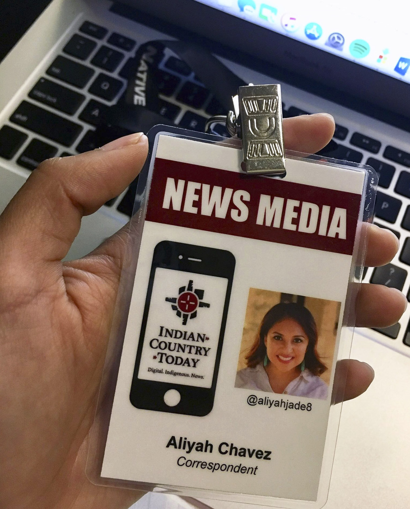
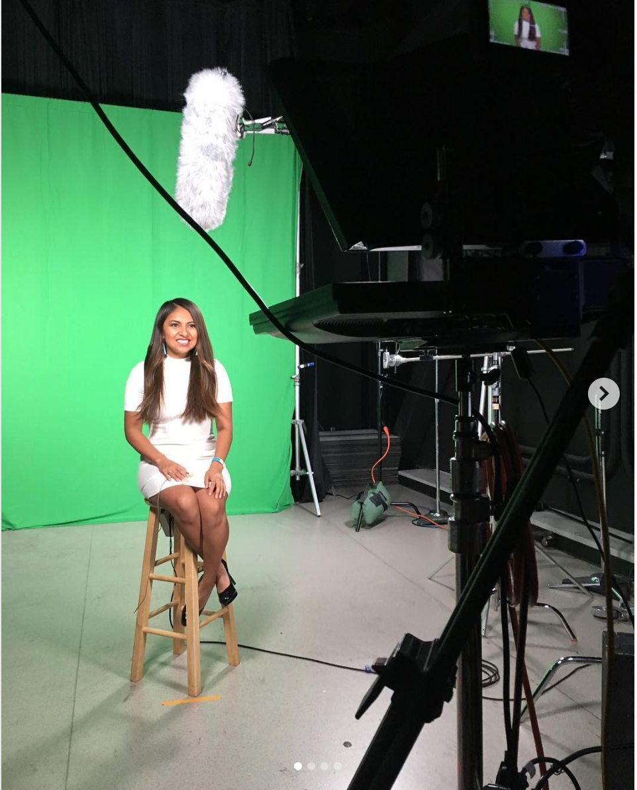
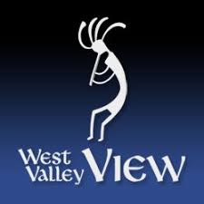
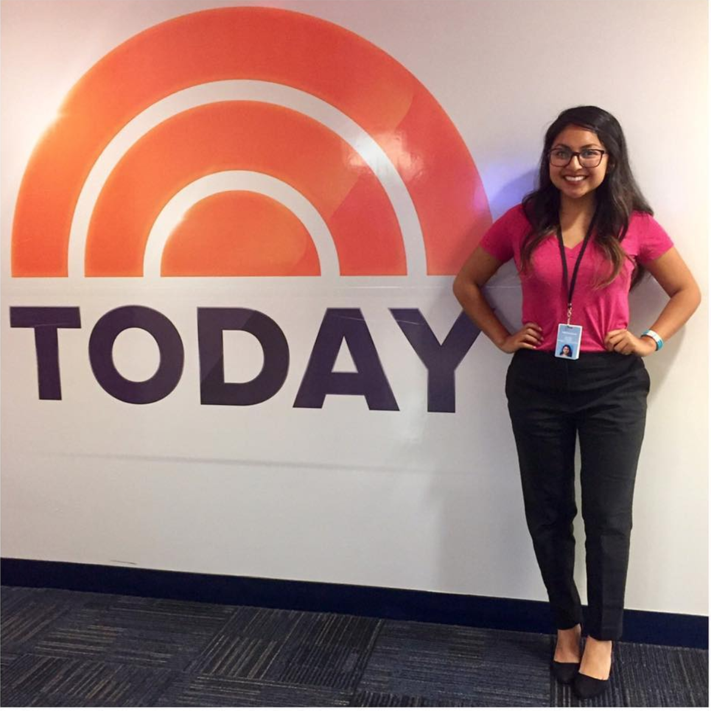
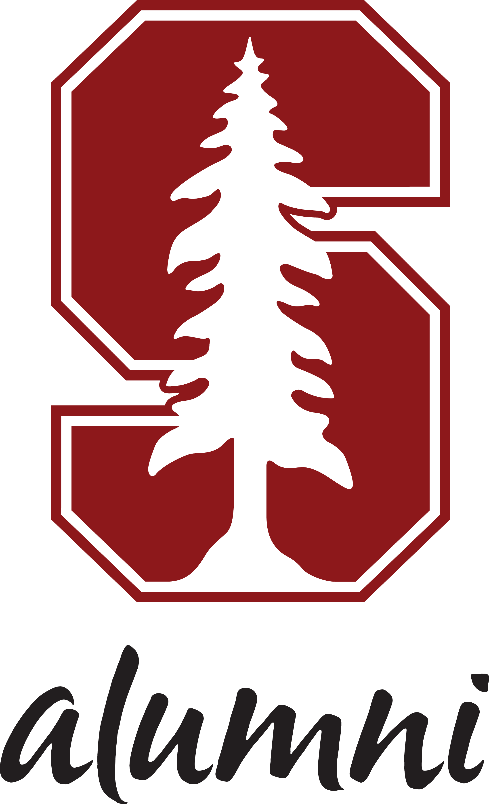
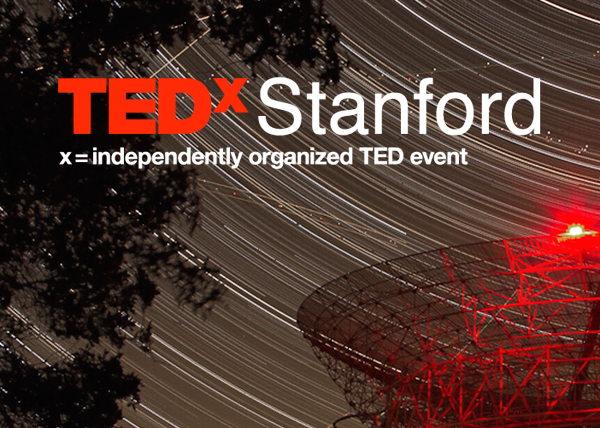
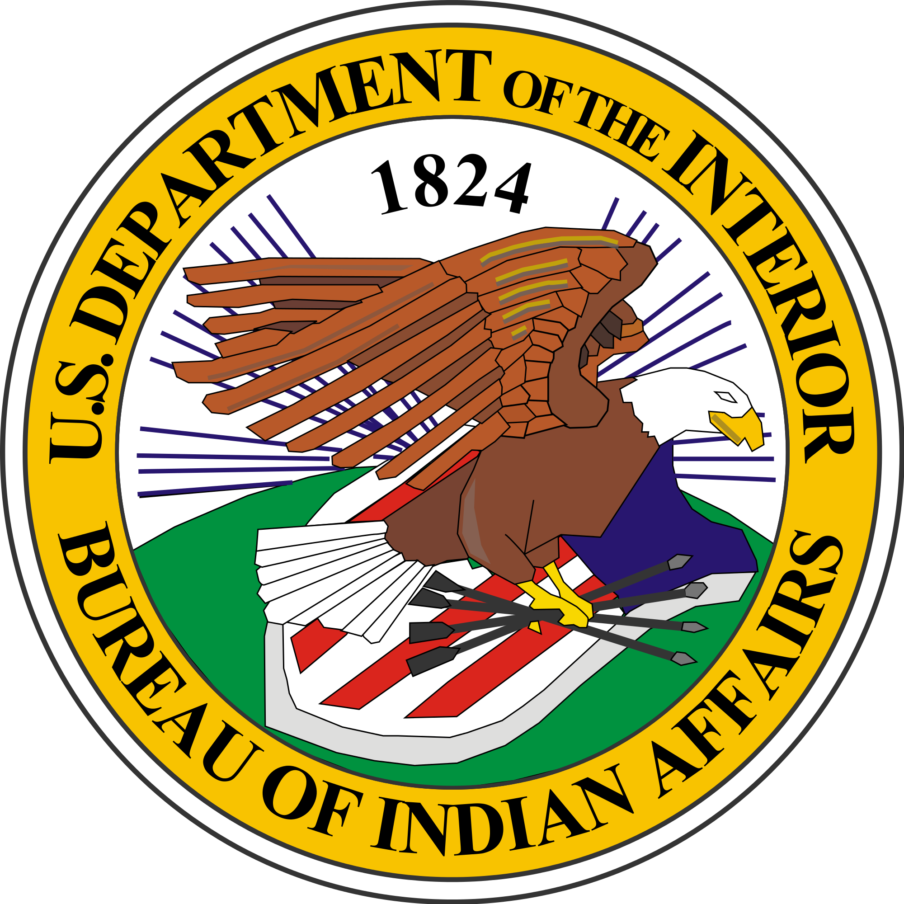

Experience
I received an M.A in Journalism from Stanford University. My reporting has covered a variety of public affairs topics including elections, education and social justice. I have previously worked with NBC's Today Show, Indian Country Today and The West Valley View. I am a proud member of the Native American Journalists Association.
Skills Include:
- Multi-Media Reporting
- Interviewing
- On-Air Reporting
- Video Editing and Production
- Storytelling
- Social Media
- Adobe Photoshop
- Data Analysis

Reporter
Indian Country Today, Jun 2019 - Present
-1 of 2 selected for Tribal Fellows Program
-Working on a PBS program for Native American peoples created by Native American journalists
Multimedia Reporter
Peninsula Press, Sep 2018 - Jun 2019
-Cover Indigenous communities around the Bay Area
-Covered stories about ballot initiatives, sexual assault rallies and a feature on Stanford Athletics equipment managers

On-Air Reporter, Election Night Coverage
Indian Country Today, Nov 2018
-Worked as part of a team that produced a 5-hour live television broadcast on election night to highlight the record number of Native Americans who ran for office.
-Gathered polling numbers in real-time
-Wrote scripts for live shots

News Reporter
Times Media Group, Jun 2018 - Sep 2018
-Covered local stories around the Phoenix Valley
-A-1 stories on city council elections and event coverage
-Work published in The West Valley View and Lovin' Life After 50
Summer Intern at TODAY Show
NBC News, Jun 2017 - Sep 2017

-Assisted TODAY producers by researching upcoming guests/ celebrities
-Logged and transcribed video packages using Media Central -Observed and helped TODAY staff in all areas of production from the control rooms, live audience shots in Rockefeller Plaza and various studio green rooms
-Ensured travel for all guests/ celebrities ran smoothly in the studio green room
-Delivered mail to producers and TODAY show staff
-Worked as the sole intern of the TODAY show for three weeks
-Ran errands for producers ranging from greeting guests of the show to helping select audience members for an "Ambush Makeover" segment

Production Assistant, Stanford Reunion Class Books
Stanford Alumni Association, Jan 2017 - Jun 2017
-Proofread Stanford alumni class pages to build alumni class books
-Tagged noteworthy alumni pages to use in catalogs
-Updated official Alumni website to reflect updated Reunion homecoming events
-Worked with Adobe Photoshop to ensure all photos in class books were correctly oriented
-Worked with fellow student production assistants proofreading pages

Editorial Intern, TEDxStanford
TED Conferences, Feb 2016 - Jun 2017
-Collected TEDxStanford speaker biographies and photographs to add to official website
-Proofread and edited TEDxStanford webpage for spelling corrections
-Wrote content for website after the website was newly revamped to be more accessible for our online audience.
-Reported and worked closely with executive producer of TEDxStanford

Student Leadership Summer Intern
Bureau of Indian Affairs, Jun 2016 - Aug 2016
-Reported to the Bureau of Indian Affairs Director, Mike Black and his Chief of Staff, Debbie McBride
-Reviewed and edited a Tribal Consultation Report
-Assisted and wrote content for a leadership forum for Indian Affairs government employees
-Travelled to Rapid City, South Dakota to attend a meeting for Tribal leaders regarding Indian affairs issues

Digital Median Intern
Stanford University, Sep 2015 - Feb 2016
-Sifted through all University news to find newsworthy events to post on Stanford's official social media pages
-Wrote content for Stanford’s official social media accounts including writing Tweets and Facebook posts
- Assisted in launching Stanford’s first Snapchat account
- Covered live major campus events and speakers including Alumni Homecoming Weekend and Big Game
-Covered TEDxStanford 2016 and tweeted in live-time regarding noteworthy presentations
-Reported to the University's Office of Communication Digital Media team